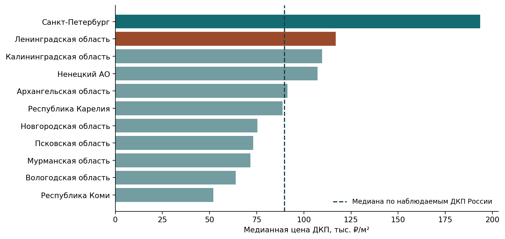
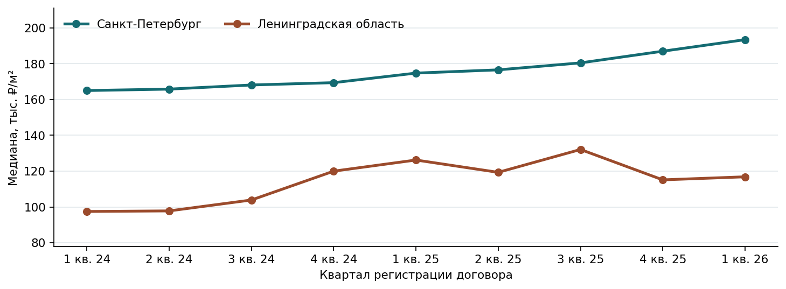
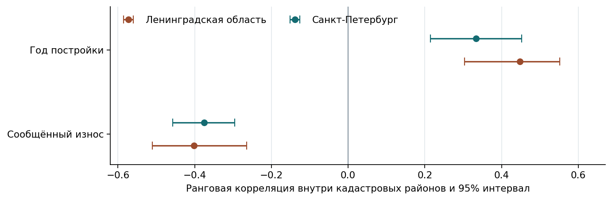
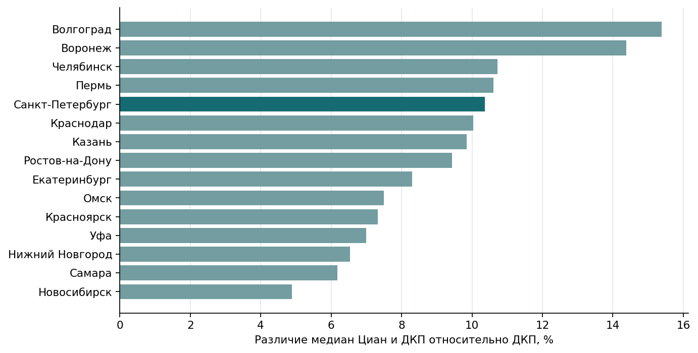

Жилинко Злата, Бусламов Анис, Соловьев Кирилл · группа 60202
ДКП жилых помещений, I квартал 2024 — I квартал 2026. Входные данные по России — 2,19 ГБ.
Общая медиана по наблюдаемым ДКП России — 89 695 ₽/м² по 212 037 записям в I квартале 2026 года.

| Регион | ДКП, ₽/м² | Наблюдения | Относительно общей медианы |
|---|---|---|---|
| Санкт-Петербург | 193 407 | 10 788 | 115,6% |
| Ленинградская область | 116 848 | 4 082 | 30,3% |
| Калининградская область | 109 661 | 2 177 | 22,3% |
| Ненецкий АО | 107 303 | 82 | 19,6% |
| Архангельская область | 91 241 | 2 431 | 1,7% |
| Республика Карелия | 88 704 | 1 265 | -1,1% |
| Новгородская область | 75 388 | 1 227 | -15,9% |
| Псковская область | 73 198 | 707 | -18,4% |
| Мурманская область | 71 569 | 1 713 | -20,2% |
| Вологодская область | 63 776 | 33 | -28,9% |
| Республика Коми | 51 896 | 1 748 | -42,1% |
| Регион | ₽/м² | Наблюдения |
|---|---|---|
| Ленинградская область | 116 848 | 4 082 |
| Санкт-Петербург | 193 407 | 10 788 |

| Регион | По всем ДКП | По сопоставимым группам | Доля I кв. 2026 |
|---|---|---|---|
| Ленинградская область | -7,4% | 8,3% | 21,4% |
| Санкт-Петербург | 10,7% | 11,5% | 99,8% |
В Ленобласти сопоставимая выборка с порогом 10 наблюдений охватила один кадастровый район. Общая медиана меняется вместе с географией наблюдений.
| Регион | Сценарий | Наблюдения | Медиана, ₽/м² |
|---|---|---|---|
| Ленинградская область | medium | 3 895 | 120 000 |
| Ленинградская область | narrow | 3 416 | 114 865 |
| Ленинградская область | wide | 4 082 | 116 848 |
| Санкт-Петербург | medium | 10 152 | 196 809 |
| Санкт-Петербург | narrow | 9 266 | 196 721 |
| Санкт-Петербург | wide | 10 788 | 193 407 |
wide — 10–400 м² и 5–2 000 тыс. ₽/м²; medium — 20–200 м² и 20–1 000 тыс. ₽/м²; narrow — 25–150 м² и 30–600 тыс. ₽/м². Эти сценарии меняют состав выборки.
| Регион | Наблюдения | За границами 1,5 IQR |
|---|---|---|
| Ленинградская область | 4 082 | 1 |
| Санкт-Петербург | 10 788 | 509 |
Выход за границы 1,5 межквартильного размаха служит статистическим признаком необычной цены. Для установления причины требуется проверка записи.

Один объект анализа — кадастровый квартал. Связи описывают территории. На цену также могут влиять состояние квартиры, инфраструктура и другие факторы.

| Город | Год | ДКП, ₽/м² | Циан, ₽/м² | Различие |
|---|---|---|---|---|
| Челябинск | 2024 | 83 763 | 94 059 | 12,3% |
| Челябинск | 2025 | 88 571 | 98 076 | 10,7% |
| Казань | 2024 | 139 130 | 161 582 | 16,1% |
| Казань | 2025 | 157 682 | 173 217 | 9,8% |
| Краснодар | 2024 | 101 078 | 118 182 | 16,9% |
| Краснодар | 2025 | 107 914 | 118 734 | 10,0% |
| Красноярск | 2024 | 103 825 | 115 385 | 11,1% |
| Красноярск | 2025 | 111 570 | 119 741 | 7,3% |
| Москва | 2024 | нет данных | 296 512 | нет данных |
| Москва | 2025 | нет данных | 311 867 | нет данных |
| Нижний Новгород | 2024 | 119 024 | 125 781 | 5,7% |
| Нижний Новгород | 2025 | 127 261 | 135 586 | 6,5% |
| Новосибирск | 2024 | 105 351 | 111 899 | 6,2% |
| Новосибирск | 2025 | 110 825 | 116 246 | 4,9% |
| Омск | 2024 | 92 141 | 101 599 | 10,3% |
| Омск | 2025 | 96 456 | 103 682 | 7,5% |
| Пермь | 2024 | 87 835 | 100 000 | 13,8% |
| Пермь | 2025 | 96 330 | 106 555 | 10,6% |
| Ростов-на-Дону | 2024 | 95 082 | 109 132 | 14,8% |
| Ростов-на-Дону | 2025 | 102 804 | 112 500 | 9,4% |
| Санкт-Петербург | 2024 | 167 089 | 189 011 | 13,1% |
| Санкт-Петербург | 2025 | 180 060 | 198 711 | 10,4% |
| Самара | 2024 | 97 884 | 108 475 | 10,8% |
| Самара | 2025 | 104 918 | 111 406 | 6,2% |
| Уфа | 2024 | 101 156 | 112 097 | 10,8% |
| Уфа | 2025 | 106 742 | 114 198 | 7,0% |
| Волгоград | 2024 | 78 295 | 92 362 | 18,0% |
| Волгоград | 2025 | 82 955 | 95 714 | 15,4% |
| Воронеж | 2024 | 83 607 | 96 429 | 15,3% |
| Воронеж | 2025 | 93 633 | 107 093 | 14,4% |
| Екатеринбург | 2024 | 108 589 | 118 373 | 9,0% |
| Екатеринбург | 2025 | 117 021 | 126 728 | 8,3% |
| Год | ДКП, ₽/м² | Геокластеры Циан, ₽/м² |
|---|---|---|
| 2024 | 167 089 | 189 011 |
| 2025 | 180 060 | 198 711 |
Циан публикует агрегаты предложений по геокластерам. Выгрузка ДКП описывает зарегистрированные договоры.